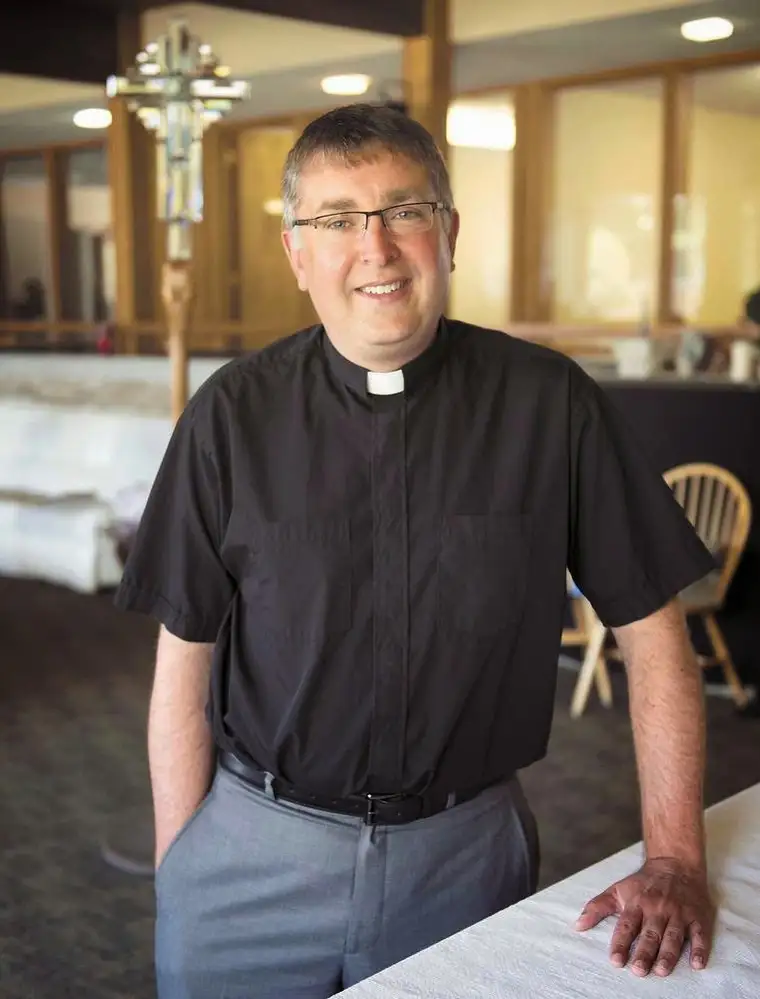

[For the sake of having a repository for my newspaper columns and articles, and allowing a second chance for those who missed them the first time, I reprint them here, with permission. The following ran in The Forum newspaper on July 12, 2014.]
Faith conversations: Bishop-elect looks to guide region’s Lutheran synod
By Roxane B. Salonen
 |
| “The Rev” (Photo credit: Nick Wagner/The Forum) |
{kind=link}
FARGO – To exemplify how he’s feeling about having been elected future bishop of the Evangelical Lutheran Church in America’s local synod, the Rev. Terry Brandt recounts a news story from 1982.
“They asked him, ‘Why did you do it?’ And he said, ‘Well, you can’t just sit there and do nothing.’ ” Brandt recalls. “ ‘Were you scared?’ they asked then. ‘Oh yes,’ he replied, ‘I was scared; wonderfully so.’ ”
That sums up Brandt’s feelings, too, as he orients himself for his newest commission, which will take place officially during his installation on Aug. 23.
“We have a lot of change happening in Eastern North Dakota … and the future’s going to be different than the past,” he says. “It’s frightening, but wonderfully so, because we know God’s in the midst of it.”
Unlike in previous times, he says, the church is no longer the center of community life where people come to be shaped morally. “Now, the church is more on the fringes of the community, and we’re just starting to get our heads around that.”
As society changes, believers are asking new questions. Young people don’t want to be told what’s black and white, he says. They want to be welcomed for who they are.
“They’re looking for a church that welcomes them to bring all of their wondering, to join with other believers to figure out what God is doing in their lives,” he says. “They want a place that’s hospitable, where their gifts are put to work and congregations are mission-minded.”
All this requires a new way of looking at how past and present might meld, and attempting what he calls “holy experiments” to see where God is leading the church.
Best man for the job
As interim assistant with the bishop, the Rev. Lee Yarger has worked closely with Brandt, who has been serving the bishop as associate the past six years, witnessing what he says is a very balanced personality well-suited to his new role.
“To be an effective bishop, you have to be a leader – a pastor to people, and especially a pastor to pastors – but there are a lot of other things involved, too, and he seems to embody them all,” Yarger says.
Being financially astute, liked by the flock and employing a strong work ethic while still staying dedicated to one’s family are all in place within Brandt.
“He is such a good family man, a good husband and father, and that has really stood out to me,” Yarger says. “That isn’t the case with everyone who has a job that is so demanding.”
He also has an unusual ability to keep his sanity in the midst of chaos. “He can have things swirling around him, and then come into the office and still have a smile on his face,” Yarger says.
A good bishop also must know his theology and be comfortable with it, yet not throw it around unwisely, he adds. “You have to have it in mind and heart and live it, and he’s a guy who can do that.”
In addition, Brandt gets along with just about everyone, according to Yarger, whether the Scandinavians who have long inhabited our area or New Americans more recently joining our communities.
As always, ‘The Rev’
Brandt’s destination seems to have been sealed in childhood in Elmore, Minn., where he was growing up with his parents and older brother, learning with his 10 classmates, and active at Shiloh Lutheran Church.
It was then that his Grandpa Arnold “Arnie” Brandt, who’d long dreamed of an offspring going into ministry, applied a label to his young grandson that stuck.
“I was probably about 7 or 8 when he gave me a nickname that to this day my entire family calls me – ‘The Rev,’ ” Brandt says.
At the time, he took it more as a joke. But after a stint as a counselor at a summer Bible camp during college, Brandt began wondering if his grandpa hadn’t been prophetic.
Until then, while studying at Southwest Minnesota State University in Marshall, he’d imagined himself as a business teacher, maybe an administrator someday. But now he’d been shown something new about himself.
“I was given an opportunity to be a leader in the church, and that was a powerful time for me,” he says. “I began to wonder and pray, asking God if he was calling me to be a teacher or a pastor.”
Brandt made the decision his junior year to pursue seminary after college.
“I was excited and frightened all at the same time,” he says. “This was when I had this sense of what God was up to, and it was much different from how I had thought my life was going to turn out.”
Principal partner
With his home congregation and all of his family supporting him, Brandt stepped into his future, which now also included a girl named Kristi.
The two had hung out as friends throughout college, and during his time at Luther Seminary in St. Paul, the city where Kristi was working, the two realized they might be a permanent match.
“We can’t even name when we started dating because we had such a good friendship for so many years,” he says. “It was this gradual thing.”
Kristi says Terry’s authenticity claimed her heart.
“When you’re with Terry, you feel like you’re the only person that matters at that moment,” she says. “I used to give him a hard time because he’s always one of the last ones to leave when we’re somewhere visiting. He wants to truly know people and their stories.”
She also feels like one of the luckiest women in the world to have him for a spouse. “He has a great sense of humor; our kids adore him, and he’s just been a rock for us.”
In marrying him, Kristi also was agreeing unknowingly to a future that would include a series of jolting moves and big decisions, which the two would tackle together, always seeing one another’s vocations as equally important.
Kristi Brandt is a high school principal in Valley City, N.D., where the family lives with their children, Lindsay, 18; Kallie, 15; and Austin, 11. They’re still discerning whether they’ll move to Fargo or continue having Terry Brandt commute, as he’s been doing.
Current calling
Past congregations Brandt has led include Concordia Lutheran Church in Crosby, N.D, where he did an internship; the two-point congregation of Trinity Lutheran in Alberta, Minn., and Good Shepherd in Appleton, Minn.; along with Clarkfield Lutheran, Clarkfield, Minn.; and Grace Lutheran, Fairmont, Minn.
He says the call in 2008 from his former pastor, Bishop Bill Rindy, asking him to consider coming to Fargo to work for the local synod was unexpected. But he’s enjoyed it – “the joys and struggles alike” – and feels well prepared for the course on which he now finds himself.
As he ponders all that’s ahead, Brandt can’t help but think of his Grandpa Arnie.
“He’s no longer alive, but he was there when I went to seminary and into serving my first two congregations,” he says. “He was able to see this grandson become a pastor and he was oh-so-proud.”
Brandt recently emailed his extended family to see if they had anything of his grandfather’s he might bring to the installation.
“One of my uncles has his confirmation Bible, so I’ll have it there that day,” he says. “It will be a day I’ll certainly be thinking of him.”
{kind=link}